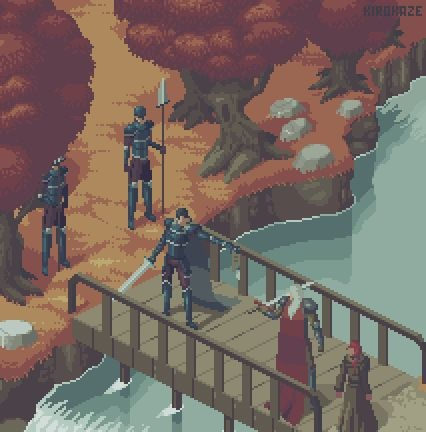
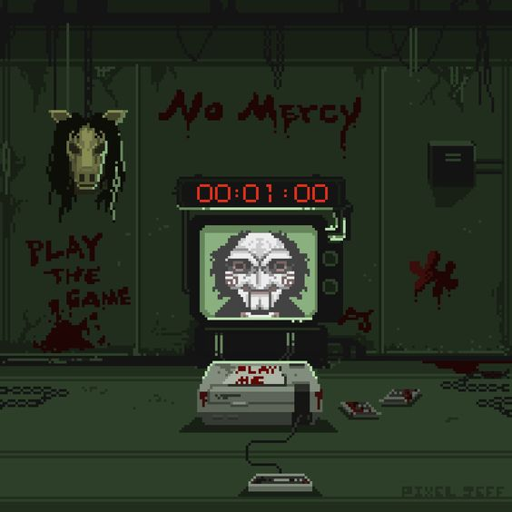
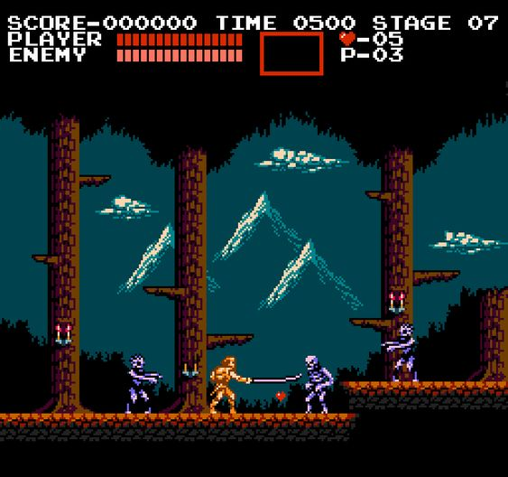
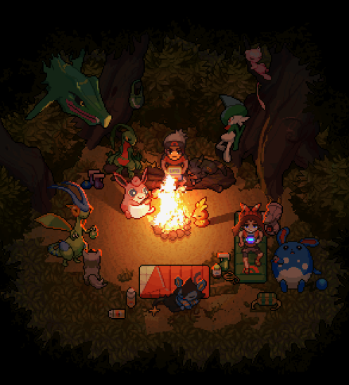

Filtrar Jogos por Categoria
Super Mario Bros

Neste jogo, você controla Mario, ou seu irmão Luigi no modo multijogador, enquanto viajam pelo Reino Cogumelo para resgatar a Princesa Peach de Bowser.
Sword and Glory
Neste jogo você controla Alfarr, um bravo guerreiro em busca de vingança do seu reino. seu objetivo é acabar com todos inimigos e resgatar a glória do seu reino.
Jogos Mortais
Neste jogo, seu objetivo, é sair com vida de um cativeiro onde você está preso.
Golden Axe

Uma entidade maléfica conhecida como Death Adder capturou o rei e sua filha, mantendo os dois em cativeiro dentro de seu castelo. Death Adder também encontra o Golden Axe (Machado de Ouro), que é o símbolo de Yuria, com isso, ele ameaça destruir tanto o machado quanto a família real, a menos que o povo de Yuria o aceite como governante.
Sekiro

Junte-se com Sekiro para derrotar todos os monstros que artomentam a sua vila.
Escape Jason

Neste jogo, controle Kate. uma sobrevivente que tenta escapar do feroz assassino Jason
Castlevania
Outro século se passou e Dracula desperta de seu sono com um plano: se ele fosse derrotado de novo, ele não seria o único a morrer. Ele rapidamente chamou a atenção de um novo Belmont: Simon Belmont, tataraneto de Christopher que foi treinado com a experiência dos dois grandes caçadores de vampiros antes dele..
Run Kenny!
Kenny é um jovem rapaz que coleciona animais lutadores. e com eles, você embarca em uma aventura divertida e com vários inimigos para enfrentar. Bole sua estratégia e que vença o melhor!
Dawn of the Dead

Sobreviva a uma orda de mortos vivos com recursos limitados e encontrados durante o jogo.